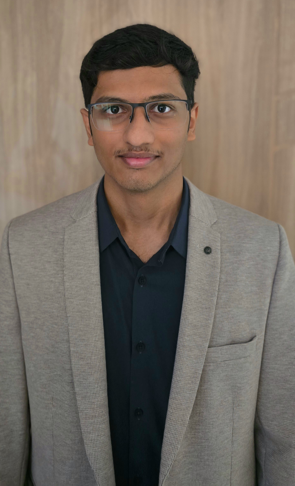

Building AI Hardware | Exploring Ideas | Making Meaningful Impact
ECE Researcher at IIIT-H | Hardware Accelerator Enthusiast | Side Quest Explorer

3rd-year ECE undergrad at IIIT Hyderabad, obsessed with hardware for AI and computer architecture. Published researcher with work on probabilistic computing and LLM accelerators. Published at ICEDGE 2025 and ISVLSI 2026.
From RISC-V processors to reconfigurable accelerators, turning ideas into silicon. Dean's List every semester. Building tech that matters.
Curiosity-driven with wide interests: sports, music, philosophy, tech, puzzles, fiction, and F1. Pursuing side quests while working toward making the world a better place.
Texas Instruments | Bengaluru, India
May 2026 – Present
Summer internship in analog circuit design
CVEST, IIIT-H | Advisor: Dr. Priyesh Shukla
April 2025 – Present
Designing AI accelerator architectures with emphasis on reconfigurable arrays and memory-centric compute. Hardware/Software co-design using SystemVerilog, Chipyard, and SystemC.
IIIT Hyderabad
July 2023 – Present
Dean's List (Top 5%) every semester
ISVLSI 2026
ICEDGE 2025
Designed a hardware accelerator for LLM workloads featuring a systolic array and two-level memory hierarchy. Achieved substantial reductions in energy and latency by minimizing data movement.
End-to-end churn intelligence platform for auto insurance with XGBoost, SHAP explanations, and DiCE counterfactuals. Won Megathon 2025.
Built a Racket-to-x86 compiler using multi-pass lowering. Supports integers, booleans, tuples, conditionals, loops, and functions with register allocation.
Developed sequential and pipelined processor implementing 8 instructions. Integrated hazard detection and forwarding units to resolve pipeline stalls.
Comprehensive collection of 20+ ML implementations from scratch: KNN, K-Means, GMM, PCA, decision trees, neural networks, and generative models.
Designed a programmable gain amplifier using fully differential OTA with 5T OTA-based CMFB. Implemented biasing and R-ladder gain control.
AI-based customer churn prediction platform
Top 5% of department (Every semester)
Hands-on training in analog circuits
Among 1M+ participants
While building toward meaningful impact, I explore diverse interests and skills. Here are my pursuits:
Amateur enthusiast across multiple sports: badminton, swimming, basketball, running, cricket, chess, poker, 8-ball pool, table tennis and more. Jack of all trades, master of none—but having fun.
Big F1 fan—not just for the racing, but for the incredible engineering happening behind it. The blend of physics, strategy, and innovation fascinates me as much as the on-track drama.
Eclectic listener with appreciation for: classical, instrumental, western, fusion, and everything in between. Music is my background companion for work and reflection.
Serious tech enthusiast who follows the latest developments closely. From AI breakthroughs to semiconductor innovations, I stay plugged into the rapidly evolving tech landscape.
Avid reader with a primary passion for fiction. Favorite works include The Da Vinci Code and Angels & Demons by Dan Brown, The Eye of the Needle by Ken Follet, Harry Potter series, works by Chetan Bhagat, and Salman Rushdie. Also enjoy movies and series occasionally.
Fascinated by the ways of the world: philosophical aspects, political systems, economic policies, and societal dynamics. I love discussing ideas and understanding how things work.
Problem solver at heart. I love puzzles, logical challenges, riddles, and anything that exercises the mind. The satisfaction of solving a tricky problem is its own reward.
I pursue these side quests not as distractions, but as explorations of what it means to live a well-rounded life. Each interest teaches me something different, sharpens different parts of my mind, and connects me with different communities. Ultimately, all of this—the research, the building, the exploring—feeds into my core mission: to build something that makes the world a better place for people.
Whether you want to discuss hardware, philosophy, book recommendations, or collaborate on something cool—let's chat!